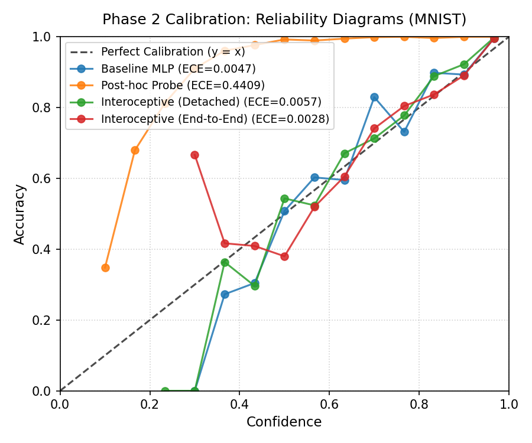
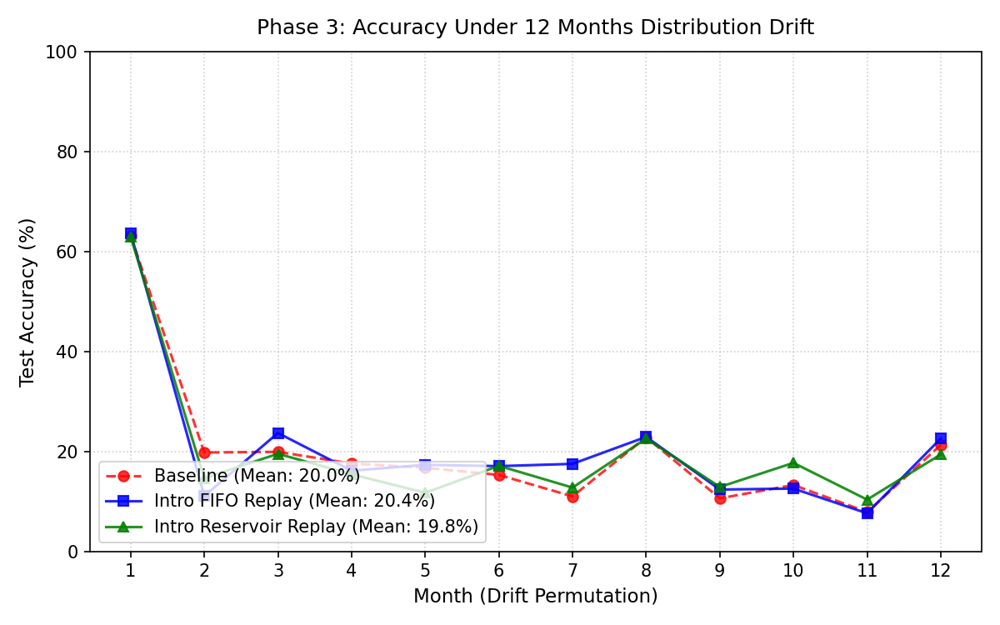

Neural Networks That Sense Their Own Internal Confusion via Hidden Activation Statistics
CPU ONLY PYTORCH ALL 5 PHASES VERIFIEDSimulate an input sample and watch how the network extracts internal stats to compute its confusion score:
Routing internal activation statistics back into the decision layer directly reduces calibration error:


Open PowerShell, paste this command, and press Enter to see it run live: